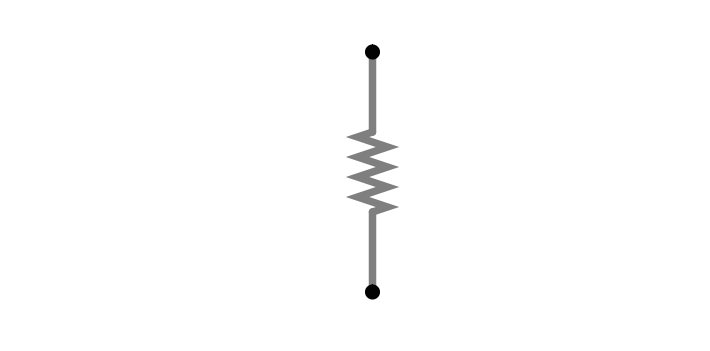
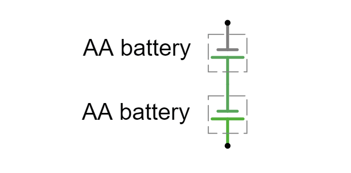
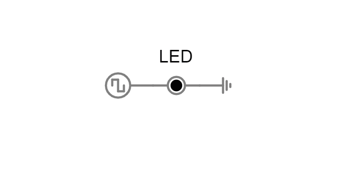
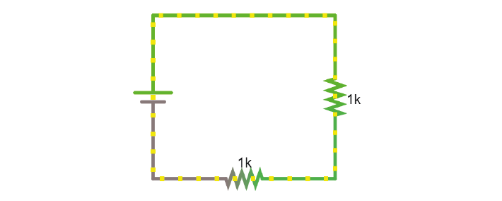
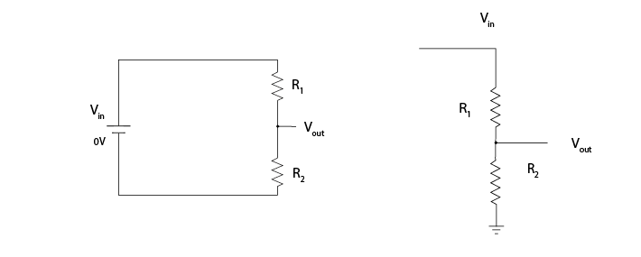
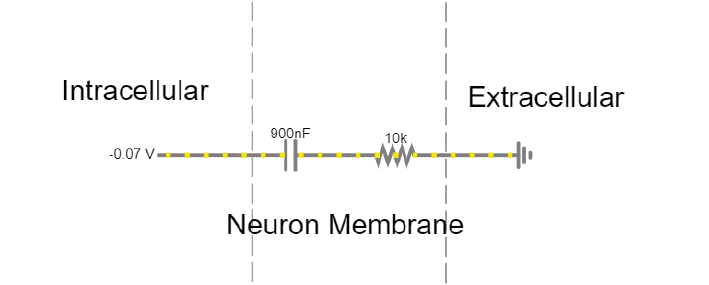
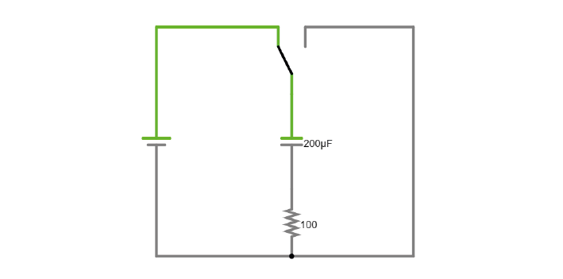
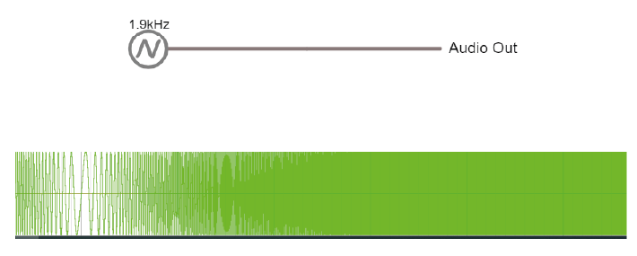
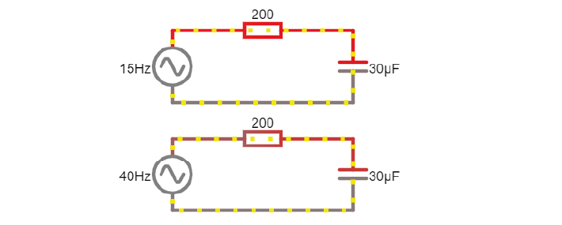
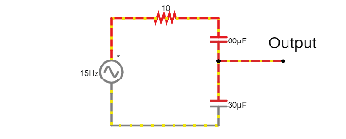

Latihan Hari ke-1: Tanpa Perangkat Keras#
1. Menggunakan Multimeter#
Kita akan menggunakan simulator rangkaian untuk memodelkan berbagai pengaturan pada multimeter. Multimeter dapat digunakan untuk mengukur tegangan, resistansi, dan arus.
Latihan
Pertama, kita akan mengukur resistansi sebuah resistor.

Pengaturan:
Tambahkan Ohmmeter ke rangkaian (Draw/Outputs and Labels/Add Ohmmeter).
Hubungkan ke resistor dan jalankan simulator.
Klik kanan pada Ohmmeter, pilih View in New Scope.
Atur scope untuk menampilkan nilai resistansi, bukan tegangan. Klik kanan pada scope lalu pilih Properties. Pilih Show Resistance alih-alih Show Voltage.
1A. Baca nilai resistor dalam Ohm dari scope.
Sekarang kita akan mengukur tegangan pada dua baterai.

Pengaturan:
Tambahkan Voltmeter ke rangkaian, hubungkan melintang pada baterai, lalu jalankan simulator.
Tegangan berapa yang Anda ukur?
Bagaimana cara membuat Voltmeter menampilkan pengukuran tegangan negatif?
2. Mengukur Tegangan#
Latihan
Perhatikan simulasi ini. Sebuah sinyal keluaran tegangan dihasilkan di sisi kiri, yang menyalakan dan mematikan LED pada frekuensi tertentu. Tujuan kita adalah mengukur karakteristik dari keluaran tegangan ini.

2A. Hubungkan voltmeter melintang pada LED. Ini mirip dengan penggunaan multimeter di laboratorium. Berapa amplitudo sinyal dalam Volt? Dengan frekuensi berapa amplitudo sinyal berubah?
2B. Visualisasikan tegangan pada LED dalam scope baru. Ini mirip dengan penggunaan osiloskop di laboratorium. Apakah tegangan yang diukur sekarang berbeda? Dengan frekuensi berapa amplitudo sinyal berubah, dan bagaimana Anda menggambarkan bentuk sinyal ini?
2C. Apa kelebihan osiloskop dibandingkan multimeter?
2D. Ubah sinyal tegangan sehingga menghasilkan gelombang sinus 50 Hz.
3. Hukum Ohm#
Hukum Ohm menjelaskan hubungan antara tegangan (V), arus (I), dan resistansi (R):
Jika melihat keseluruhan rangkaian, kita dapat menggunakan hukum ini untuk menghitung berapa besar arus yang akan mengalir. Berikut adalah rangkaian sederhana dengan sebuah baterai dan dua resistor. Arus mengalir dari terminal positif baterai ke terminal negatif baterai. Resistor-resistor tersebut tersusun seri karena hanya ada satu jalur aliran arus.

Latihan
3A. Klik gambar untuk membuka simulator. Klik kanan pada kawat bagian atas di rangkaian, lalu pilih Edit untuk menampilkan arus yang mengalir melalui kawat tersebut. Klik dua kali pada salah satu resistor untuk menurunkan nilainya. Apa yang terjadi pada arus di rangkaian?
4. Resistor#
Berikut simulasi lain yang menunjukkan Hukum Ohm. Kali ini, arus mengalir dari sumber tegangan 5 Volt (hijau terang) ke ground (abu-abu, bumi), melalui salah satu dari dua resistor. Resistor-resistor tersebut tersusun paralel karena arus dapat mengalir melalui resistor yang satu atau yang lain.
Latihan
Pengaturan:
Klik gambar untuk membuka simulator.
Klik kanan pada sebuah resistor dan pilih View in new scope.
Lakukan hal yang sama untuk resistor lainnya. Anda dapat menekan Reset untuk memulai ulang simulasi dan menyinkronkan scope.
4A. Apa yang Anda perkirakan akan terjadi pada tegangan di resistor sebelah kiri jika resistansinya digandakan? Apa yang akan terjadi pada arusnya?
4B. Apa yang akan terjadi pada tegangan dan arus di resistor sebelah kanan ketika resistor yang lain digandakan nilainya?
Sekarang gandakan nilai resistor sebelah kiri di simulator dan lihat apakah perkiraan Anda benar.
5. Pembagi Tegangan#
Tegangan selalu diukur relatif terhadap suatu titik yang kita anggap sebagai 0V. Pada baterai, terminal negatif adalah 0V.
Tegangan (energi potensial) akan “turun” pada setiap resistor, karena energi potensial diubah menjadi bentuk energi lain seperti panas atau cahaya. Dalam rangkaian yang diberi daya oleh baterai 9V, seluruh 9V energi potensial dari sumber baterai harus turun pada komponen rangkaian, untuk kembali ke 0V di terminal negatif baterai.
Pada setiap rangkaian di bawah ini, arus melalui R1 harus sama dengan arus melalui R2, karena keduanya adalah resistor seri. Mengikuti Hukum Ohm, dengan arus yang sama, resistor yang lebih besar akan memiliki penurunan tegangan yang lebih besar (V = IR). Total penurunan tegangan pada rangkaian harus sama dengan tegangan yang diberikan.

Oleh karena itu, dalam rangkaian dengan beberapa resistor seri, perbandingan nilai resistansinya menentukan berapa besar tegangan yang turun pada masing-masing resistor. Dengan demikian, kita dapat membagi tegangan dari suatu sumber pada resistor-resistor untuk menghasilkan tegangan keluaran Vout:
Latihan
5A. Menggunakan simulator (layar penuh kosong di sini: https://tinyurl.com/y477e9qd), bangun rangkaian pembagi tegangan dengan menggunakan:
sebuah baterai 3V (buat sumber tegangan 1-terminal dan atur ke 3V)
2 resistor
sebuah kawat pembacaan (klik kanan lalu Edit untuk menampilkan tegangan Vout)
Untuk menghasilkan tegangan keluaran Vout sebesar 2,1V pada kawat pembacaan.
5B. Ubah perbandingan nilai resistor hingga tegangan keluaran yang terbaca setara dengan ukuran potensial aksi yang diukur pada cairan ekstraseluler.
6. Kapasitor#
Ada dua jenis kapasitor. Kapasitor terpolarisasi harus digunakan dengan orientasi tertentu. Biasanya, kapasitor keramik tidak terpolarisasi dan dapat digunakan pada kedua arah, sedangkan kapasitor elektrolit berbentuk tabung terpolarisasi. Kaki negatif ditandai dengan simbol ‘-’, dan kaki positif biasanya lebih panjang.
Seperti dibahas pada handout Teori, kapasitor muncul di mana pun muatan dapat dipisahkan pada dua permukaan konduktif yang dipisahkan oleh bahan isolator yang mencegah kedua pelat bersentuhan. Membran sel adalah kapasitor, demikian pula elektroda.
Jumlah muatan (Q) yang dapat dipisahkan oleh sebuah kapasitor bergantung pada kapasitansinya (C, diukur dalam farad) dan tegangan (V) pada kapasitor tersebut.

Latihan
Pengaturan:
Simulator menunjukkan ‘membran sel’ sederhana yang direpresentasikan sebagai sebuah kapasitor dan sebuah resistor. Mengubah sumber tegangan intraseluler akan mengubah tegangan pada membran sel. Cairan ekstraseluler selalu berada pada 0 V.
6A. Tegangan awal pada kapasitor seharusnya -72 mV. Jika tidak, atur slider Tegangan ke sekitar -70 mV. Klik Reset untuk melihat arus mengalir melalui rangkaian hingga kapasitor terisi hingga 72 mV. Ke arah mana arus mengalir? Mengapa arus berhenti mengalir?
6B. Dengan menggunakan slider Voltage, atur sumber tegangan ke 0 mV, lalu ke 20 mV. Apa yang terjadi pada aliran arus di rangkaian?
6C. Dapatkah Anda meniru sebuah potensial aksi dengan mengubah tegangan intraseluler?
Latihan
Pada simulasi ini, Anda dapat mengisi dan mengosongkan sebuah kapasitor dan melihat aliran arus melalui rangkaian.

6D. Ubah simulasi sehingga kapasitor saat mengosongkan muatannya dapat menyalakan sebuah LED (Draw/Outputs and Labels/Add LED). Simulator akan menampilkan LED berwarna merah ketika menyala.
6E. Visualisasikan proses pengisian dan pengosongan tegangan pada kapasitor. Bagaimana cara membuat proses pengisian dan pengosongan menjadi lebih lambat?
6F. Tingkatkan nilai kapasitansi kapasitor. Berapa lama waktu yang dibutuhkan kapasitor untuk benar-benar mengosongkan muatannya?
7. Sinyal Bolak-Balik (AC)#
Baterai menyediakan arus searah (direct current) dalam satu arah. Sebaliknya, potensial aksi dan LFP yang kita ukur dari neuron dapat mengalir ke dua arah; ini adalah arus bolak-balik (alternating current). Anda sendiri telah menghasilkan arus bolak-balik pada latihan 6C.
Arus bolak-balik memiliki frekuensi, yaitu seberapa cepat arah arus tersebut berubah. Potensial aksi memiliki frekuensi yang sangat tinggi, sedangkan input sinaptik dan penjumlahannya jauh lebih lambat.
Berikut adalah demo di mana sinyal bolak-balik meningkat dan menurun frekuensinya. Di bagian bawah halaman, Anda dapat melihat gelombang yang divisualisasikan.
Note
Saat Anda memiliki kapasitor di dalam simulator, sebaiknya klik Reset setiap kali Anda melakukan perubahan, karena kapasitor akan menyimpan muatan dan dapat menimbulkan efek yang aneh.
Latihan
7A. Tekan Play Audio untuk mendengar bagaimana suara dimodulasi saat frekuensi meningkat.

8. Impedansi#
Karena arus bolak-balik memiliki frekuensi, kita perlu menggunakan istilah Impedansi (Z) alih-alih Resistansi untuk menggambarkan bagaimana komponen rangkaian menghambat aliran arus. Lihat handout teori untuk informasi lebih lanjut.
Besarnya impedansi sebuah kapasitor, yang juga disebut reaktansi (Xc), bergantung pada:
Di mana f adalah frekuensi perubahan arah arus, dan C adalah kapasitansi.
Impedansi yang diberikan oleh kapasitor bervariasi terhadap frekuensi. Karena kita tertarik pada sinyal dengan frekuensi tertentu (misalnya 1000 Hz untuk potensial aksi), kita harus memastikan rangkaian perekaman dirancang sedemikian rupa sehingga frekuensi yang kita minati mengalami hambatan yang kecil.
Ketika Anda melihat sebuah kapasitor di dalam rangkaian, Anda tahu bahwa Anda harus memikirkan frekuensi sinyalnya. Arus searah yang stabil tidak memiliki frekuensi, sehingga Xc bernilai tak hingga: kapasitor hanya melewatkan sinyal bolak-balik.
Latihan

Pengaturan:
Berikut adalah dua rangkaian dengan sumber tegangan bolak-balik masing-masing 15 dan 40 Hz. Pada osiloskop di bagian bawah simulator, jejak tegangan dari sumber dan kapasitor ditampilkan.
8A. Visualisasikan arus pada rangkaian (misalnya arus yang mengalir melalui sebuah bagian kawat). Anda dapat menambahkan scope baru untuk ini atau klik dua kali pada kawat dan pilih show current. Rangkaian mana yang memiliki amplitudo arus lebih besar?
8B. Tambahkan rangkaian ketiga, diberi daya oleh sumber tegangan bolak-balik 120 Hz. Apa yang terjadi pada arus saat frekuensi meningkat?
(Pertanyaan bonus: apa yang terjadi pada penurunan tegangan pada kapasitor ketika frekuensi meningkat?)
9. Pembagi Tegangan Kapasitif#
Karena kapasitor menghambat aliran arus, kita dapat menggunakannya untuk membangun pembagi tegangan, sama seperti pembagi tegangan berbasis resistor yang ditunjukkan sebelumnya.
Latihan

9A. Ubah nilai kapasitansi C pada kapasitor pertama untuk menguji apakah rumus pembagi tegangan resistor juga berlaku untuk kapasitor.